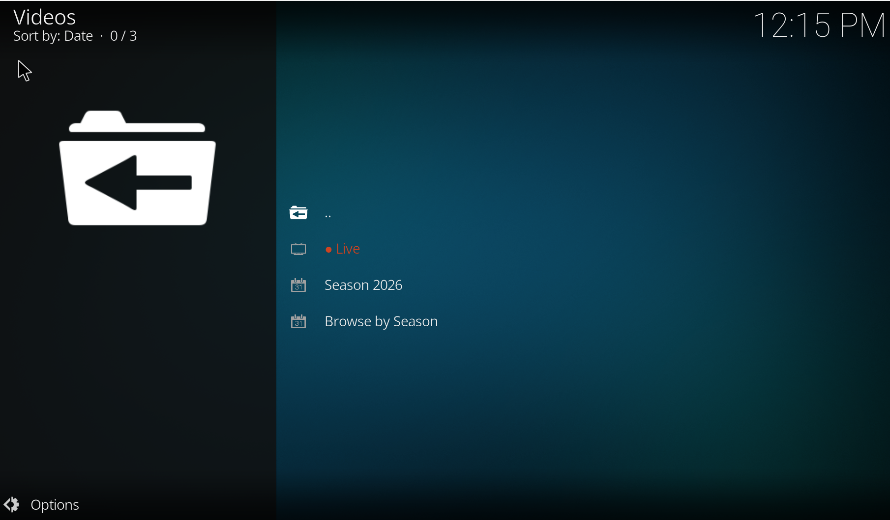
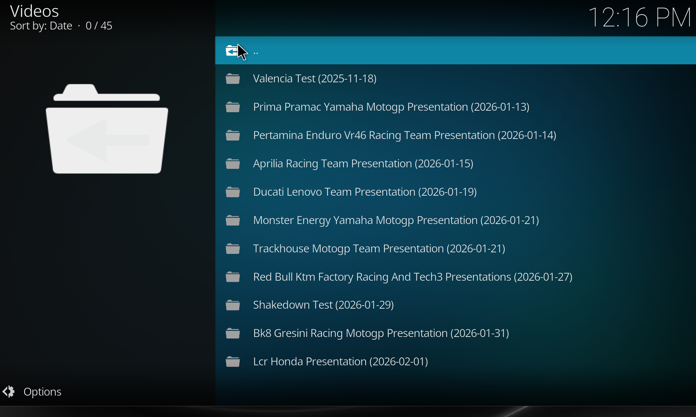
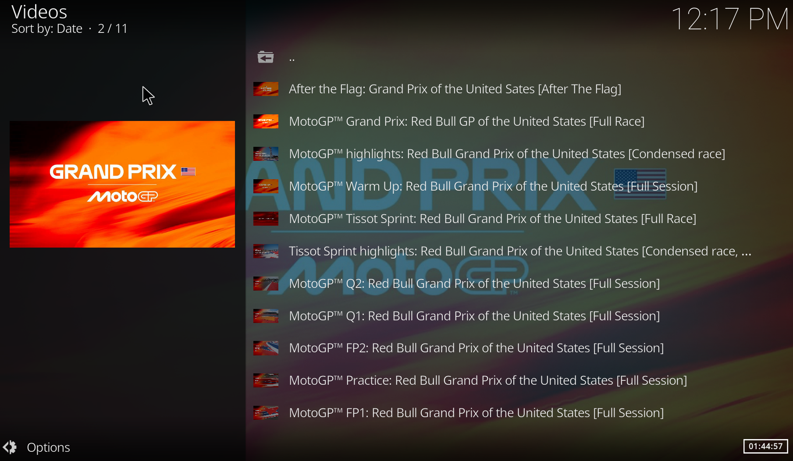
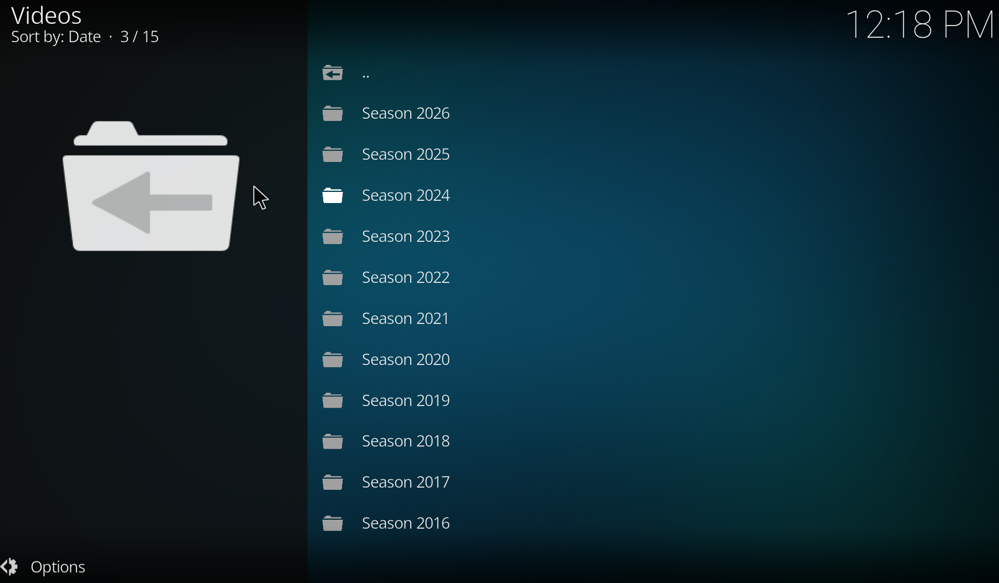
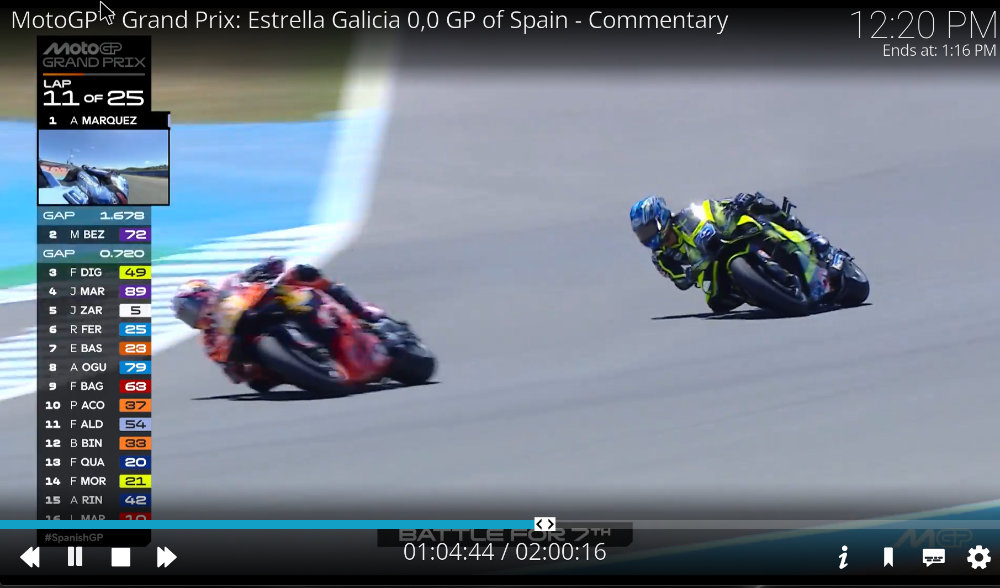
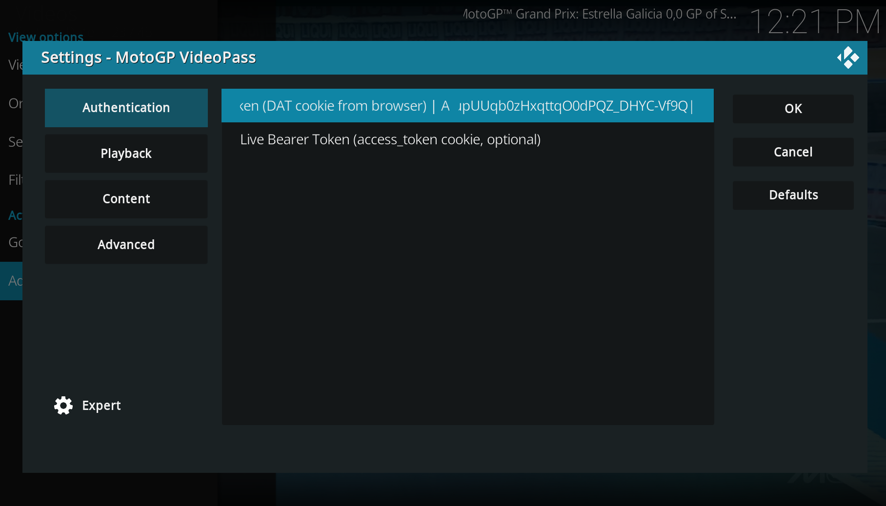

Watch MotoGP, Moto2 and Moto3 races, qualifying, practice — and live race weekends — straight from Kodi with your existing VideoPass subscription.
⬇ Download latest release View on GitHub





Install the repository once and Kodi keeps this add-on (and the YouTube Music add-on) up to date automatically.
Open the repository landing page →
Manual installs do not auto-update.
No — this is an unofficial Kodi add-on. It is not affiliated with MotoGP, Dorna Sports or VideoPass.
Yes. Both VOD and live playback require an active VideoPass subscription tied to the cookie you provide.
Yes. Since v0.2.0 a ● Live entry appears at the top of the main menu when a session is live on motogp.com.
Yes — browse by season → event → category to find races, qualifying, practice and sprint sessions.
Yes — Kodi 21 Omega is the primary target.
Yes — it is regularly tested on LibreELEC running Kodi 21.